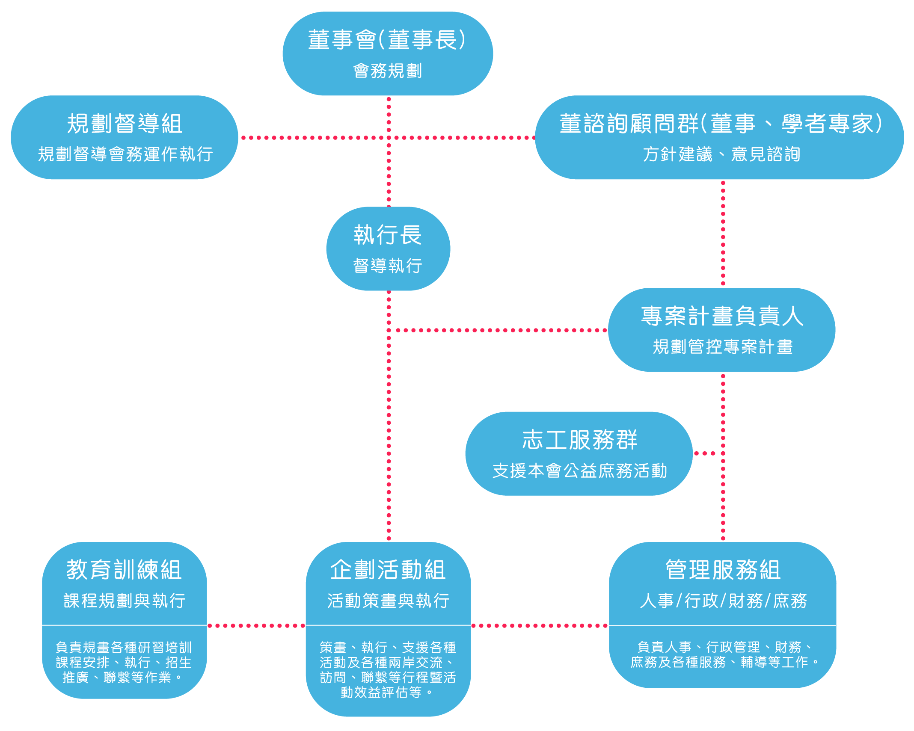

大如意專業培訓
關於大如意
宗旨理念
本會自1988年創立以來，即秉持『全人教育，培育精英』、『零歲啟蒙，終身學習』的理念，服務於社會。二十多年來戮力規劃並開辦嬰幼兒啟蒙、教養課程，讓眾多家庭受惠，不論是家長、保母、保育人員、幼教老師或其他兒童照顧者，從孕育新生命開始到孩子呱呱墜地到黃金時期發展的幼苗紮根基礎工程上，不管是照顧、教養知識的獲得或專業技能的養成，始終著眼於發展幼兒教育、建構幸福家庭進而營造溫馨社會。近年來有感於人口急速老化及家庭結構改變，對於長輩及其他家庭成員的居家照護工作更是迫切需求，因而著手策畫系列的【居家照顧實務訓練】課程，秉持訓用合一的精神，希望能幫助更多中高齡及弱勢族群的夥伴，透過專業知識、技能的學習使能投入職場，除能有效彌補人才需求的社會缺口，進而提升夥伴們的生活品質，改善其家庭生活，並期待他日也能回饋社會，造福更多群眾！！
紙本申請表
財團法人精英文教事務基金會
1988
年第一個成立之公益機構，由吳學勵先生捐資成立，創會董事中有郁慕明先生（前立法委員，現任新黨主席）、李伸一律師（前監察委員，消費者保護文教基金會董事長），黃任中先生（臺北商界聞人）等。本屆董事則有谷家華先生（前監察委員），陳雨鑫先生（行政體育委員會副主任委員）和方鳴濤律師（崇法國際商務法律事務所主持律師），張文瀚醫師（臺北馬偕醫院急診醫學科主任）等人。
基金會業務主要集中三大項：
1.
各類大型社會服務與公益活動等
2. 兩岸文化教育交流參訪等
3. 教育訓練
- 專業培訓各類兒童教育專業人才近20年，合計數萬人次，數百種課程。
- 近5年配合臺灣老齡化社會，亦從事培訓老、病照護專業人才千餘人次。
社團法人中華熊媽媽保母公益協進會 (www.e-nanny.com.tw)
1999年配合臺灣大力推動0~3歲的幼稚教育及照顧新政策，所成立之第四個公益機構，協會結合了臺灣幼教學者專家，護理專業人仕及現職保母，並接受內政部兒童局之指導，及臺北市、縣政府、金門縣政府的委託參與了臺灣0—3歲幼稚教育與照顧的重要政策與措施。
協會工作集中在：
1.
師資培訓：依據政府培訓規範，為臺灣培訓數千名專業保母，並輔導大部分學員考取保母專業證照
2. 媒合轉介：為家長與保母免費媒合轉介，分別解決家長的托育煩惱及保姆之就業問題
3.
在職成長：一方面訪視保母，確保並提升其托育品質，另一方面提供各種輔導措施及成長進階課程，督促保母不斷成長
福爾曼管理事業股份有限公司 (www.e-learn.org.tw)
1991
年第三個依照臺灣法令規定成立之全人教育機構，資本額新臺幣壹千五百萬元。
公司業務主要集中在：
1. 各類兒童發展相關教具、圖書之研發及銷售
2.
各類圖書、教具之進出口銷售，並為“中國圖書進出口總公司”“中國圖書進出口上海公司”“中國圖書進出口廣州公司”之臺灣圖書期刊供應單位，將臺灣之優良出版品大量供應大陸
3.
兒童教育單位之經營管理暨諮詢等服務——協助各幼稚教育機構之成功經營，並以“福爾曼精英兒童培育學校”之“全人教育，培育精英”之教育理念，服務於社會
社團法人中華兒童發展教育公益協進會 (www.e-child.org.tw)
2002年成立之第五個公益機構，目的在於結合醫學、心理、職能治療等各個領域專業人仕，與幼稚教育專家會同為0~8歲兒童黃金發展階段提供更大關注與協助。協會由於基金會董事，博士張文瀚醫師積極投入，短短時間已成為兒童發展領域精英機構。
協會之會務主要在：
1.
師資培訓：
- 協會在張醫師規劃下，專業實施“兒童發展師”之認證培訓，至目前已訓練百佘名兒童發展師，為守護兒童發展更盡一分心力。2007年並將實施兒童發展師進階培訓課程
- “美國丹佛DENVERⅡ兒童發展評量技術員”之認證培訓 ，協會也是華人地區首家有權培訓此技術專業人員的機構
2.
評量檢測：協會推薦多種測評方式，如丹佛評量，皮紋福爾曼優勢潛能評量……等，協助父母深入瞭解並掌握孩子發展狀況
3.
優質行為訓練：為孩子們進行各種優質行為訓練，不論在家自行訓練，或到發展中心接受兒童發展師指導訓練，都可幫助父母掌握孩子行為“黃金髮展期”
4.
指導成立社區兒童發展中心：為了貫徹協會宗旨，實現協會目標，計畫於兩岸指導成立多家“社區兒童發展中心”。為兒童們提供評量檢測及優質行為訓練的服務
發展藍圖
創辦人吳學勵先生有感於本會肩負之CSR社會責任及M型經濟與社會貧富差距現象日益嚴重，與其仰賴社會資源供給，不如加強其具備跨入職場之專業技能！！有效改善弱勢族群脫離困境與貧窮，唯〝教育〞是也！故此，我們針對身陷經濟困頓但有心向學且態度積極之中低收入戶或家暴婦女…等弱勢族群，希望能積極輔導其後端就業市場銜接，使其在專業技能養成後，能投入職場，改善家庭經濟，提升家人生活品質，並期待他日也能回饋社會，造福更多群眾！！
組織架構
